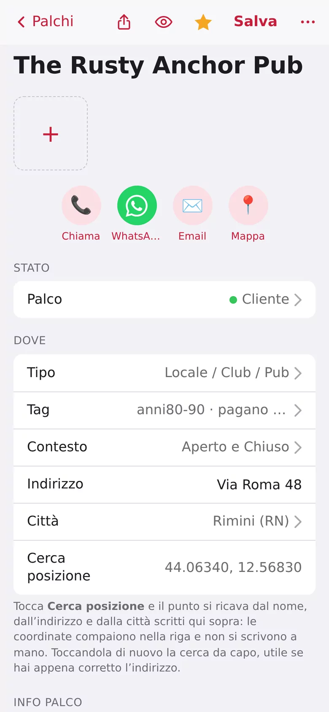
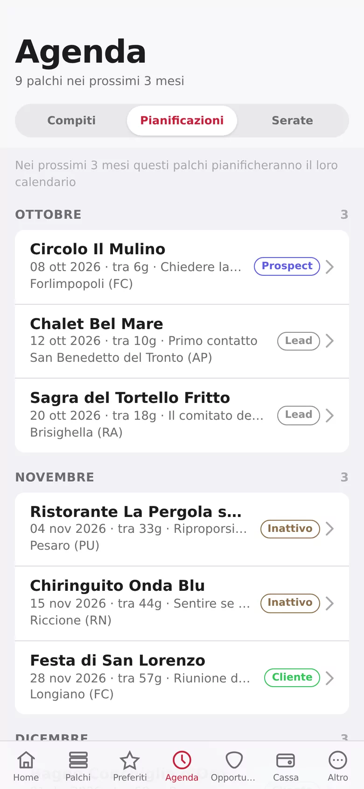
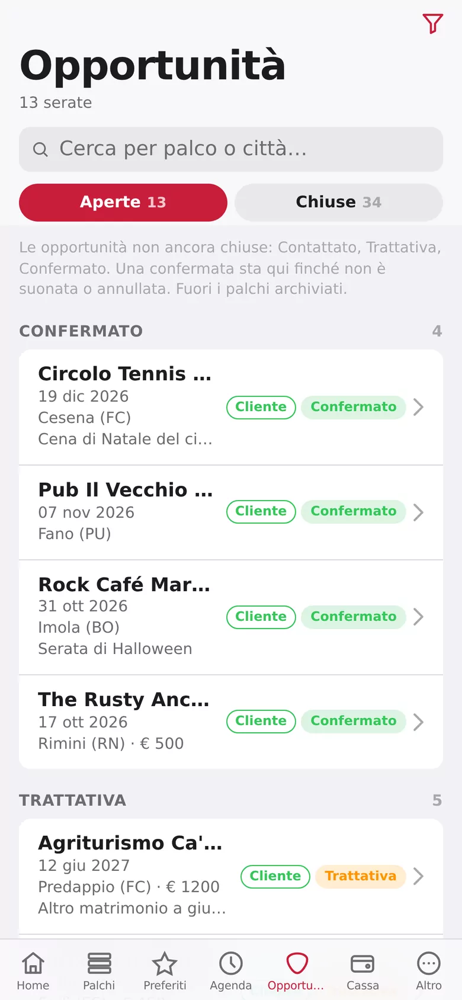
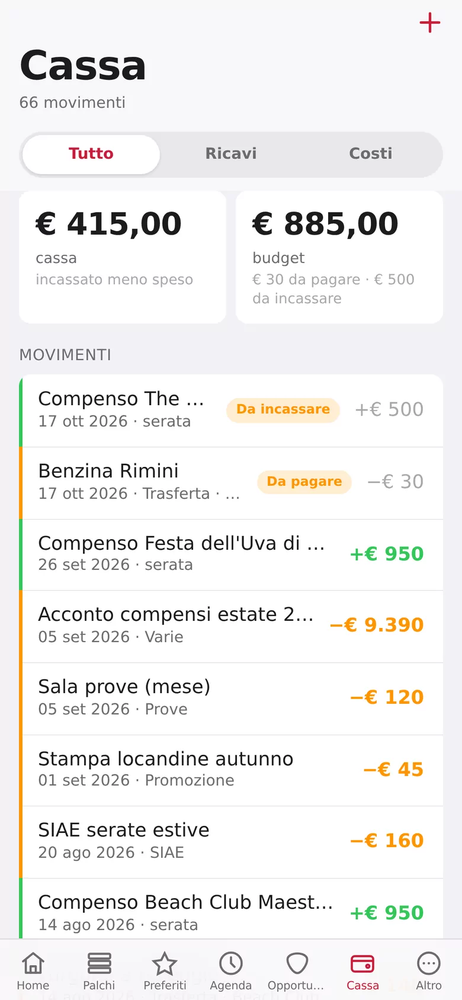
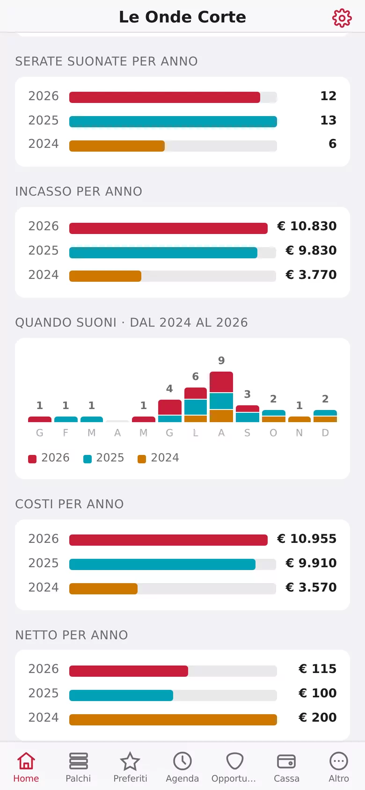
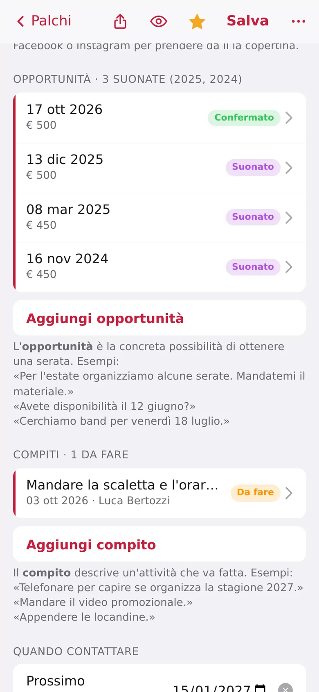
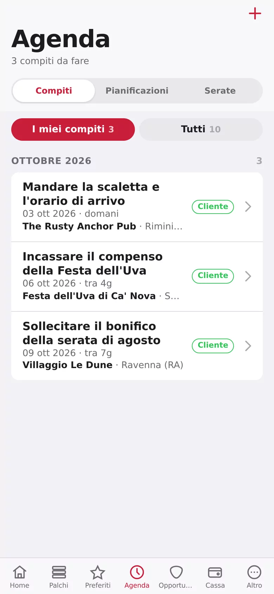
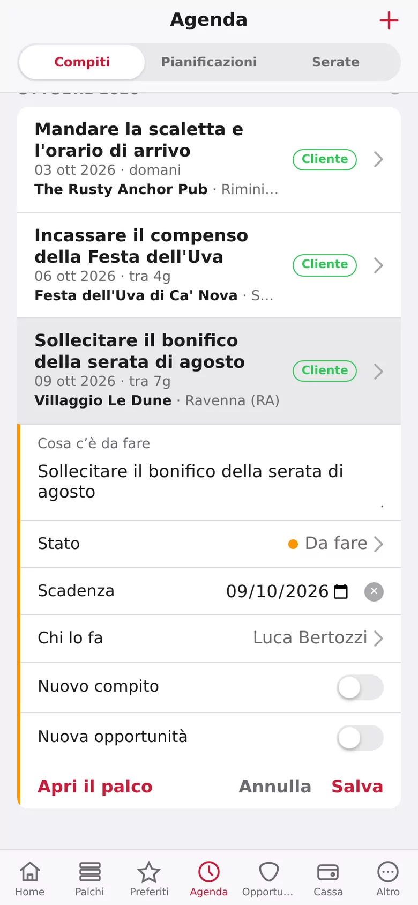
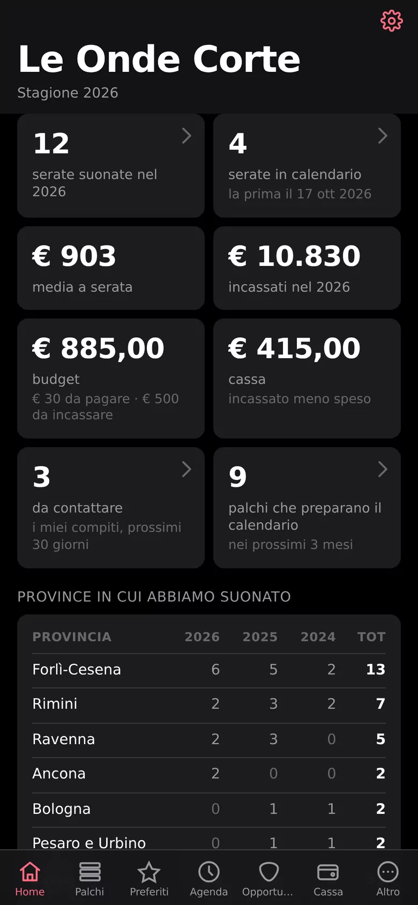

Dal primo contatto al bonifico, senza fogli Excel
Ogni serata comincia con una telefonata. Con MioPalco sai a chi farla e quando, e niente si perde fra un messaggio e l'altro.
Metti in fila i posti dove vuoi suonare
Pub, bagni al mare, feste di paese, circoli, ristoranti: ogni palco ha la sua scheda, con referente, telefono, social, foto e note.
- Stati chiari: da contattare, interessato, cliente…
- Filtri per zona, tipo, tag e stagione
- Una stella sui preferiti

Richiama al momento giusto, ogni anno
Il bagno al mare decide il cartellone a febbraio, la festa di paese a maggio. Segni il periodo una volta sola e MioPalco te lo ricorda tutti gli anni.
- Agenda con chi chiamare questa settimana
- Compiti con scadenza e promemoria sul telefono
- Un messaggio WhatsApp pronto in un tocco

Segui ogni serata fino al palco
Dalla prima chiacchierata alla data confermata: ogni trattativa ha il suo stato, e vedi subito quelle che aspettano una tua risposta.
- Le trattative aperte, tutte in una schermata
- Data, compenso e note della serata
- Lo storico di ogni stagione, anno per anno

Tieni i conti senza fare i conti
I compensi delle serate finiscono da soli in cassa. Segni chi ha pagato, e a fine stagione sai quanto ha reso ogni palco.
- Incassato e da incassare, sempre aggiornati
- Grafici per anno, a colpo d'occhio
- Esportazione completa quando vuoi

Fatta per il telefono, dal primo pixel





Le schermate mostrano dati inventati.
Niente CRM aziendale travestito da app per band
Solo le cose che servono davvero a chi deve riempire il calendario: i posti, le persone, le date e i soldi.
Tutta la band dentro
Inviti gli altri con un link e lavorate sugli stessi palchi. Ogni band ha il suo spazio: nessuno vede i dati degli altri.
Promemoria sul telefono
Una notifica qualche giorno prima della scadenza di un compito, così la telefonata non scappa.
Palchi vicino a te
I locali sulla mappa e filtrati per distanza: comodo per organizzare un giro di chiamate zona per zona.
Ricontatti stagionali
"A febbraio", "dopo l'estate": un periodo senza anno, che torna da solo ogni stagione.
WhatsApp in un tocco
Messaggi già pronti per presentarvi o richiamare: scegli il modello, controlli e invii.
Statistiche delle stagioni
Serate suonate, incassi, palchi nuovi: la Home ti dice com'è andata, anno contro anno.
Foto e social
La foto del locale dal telefono o presa da Instagram e Facebook, così in elenco lo riconosci al volo.
I tuoi dati sono tuoi
Esporti tutto quando vuoi. Niente pubblicità, niente profilazione, niente dati venduti a nessuno.
Sul telefono come un'app vera, senza App Store
MioPalco è una web app: la apri dal browser e la aggiungi alla schermata Home. Ha la sua icona, si apre a tutto schermo e si aggiorna da sola.
Apri Safari
Vai su miopalco.com con Safari. Da Chrome su iPhone funziona uguale, ma Safari è il più semplice.
Tocca Condividi
Premi il tasto Condividi nella barra in basso.
Aggiungi alla Home
Scorri il menu e scegli Aggiungi alla schermata Home, poi Aggiungi.
Aprila dall'icona
Trovi il plettro di MioPalco fra le tue app. Entra con Google e, se vuoi i promemoria, attiva le notifiche.
Su iPhone le notifiche arrivano solo se apri MioPalco dall'icona sulla schermata Home, non da Safari. Serve iOS 16.4 o successivo.
Apri Chrome
Vai su miopalco.com con Chrome. Anche Edge e Samsung Internet vanno bene.
Apri il menu
Tocca i tre puntini Menu in alto a destra.
Installa l'app
Scegli Installa app (su alcuni telefoni è "Aggiungi a schermata Home"), poi Installa.
Aprila dall'icona
MioPalco compare fra le app come tutte le altre. Entra con Google e consenti le notifiche per i promemoria.
Spesso Chrome propone da solo "Installa MioPalco" con un avviso in basso: basta toccarlo.
Nessun abbonamento. E il codice è di tutti.
MioPalco è un progetto personale, nato per organizzare le serate di una band. Il codice è pubblico su GitHub con licenza MIT: puoi usarlo, studiarlo, migliorarlo, o farlo girare sul tuo server.
# sul tuo server, anche un Raspberry Pi $ git clone https://github.com/teopost/miopalco $ cd miopalco $ docker compose up -d --build ✔ Container miopalco Started # e apri il browser su http://localhost:8765
Quello che ci chiedono di solito
È davvero gratis?
Sì. Non c'è un piano a pagamento, non ci sono pubblicità e non vendiamo dati. Il progetto è open source e chiunque può verificarlo sul codice.
Devo scaricarla da un App Store?
No. MioPalco si apre dal browser su miopalco.com e la aggiungi alla schermata Home: da lì funziona come un'app normale, con la sua icona e a tutto schermo. Gli aggiornamenti arrivano da soli.
Posso usarla con tutta la band?
Sì. Crei la tua band e mandi un link di invito agli altri: lavorate tutti sugli stessi palchi e sulle stesse serate. Se suoni in più band, ognuna ha il suo spazio separato.
Chi vede i miei contatti?
Solo i membri della tua band. Ogni band ha uno spazio separato e nessuno vede i palchi o i referenti degli altri. In qualsiasi momento puoi esportare tutto.
Posso installarla sul mio server?
Sì: il codice è su GitHub con licenza MIT, e con Docker parte con un solo comando. Python e SQLite: niente database da configurare.
Il prossimo palco
è una telefonata
Apri MioPalco, segna il primo locale e lascia che sia lui a ricordarti quando richiamare.